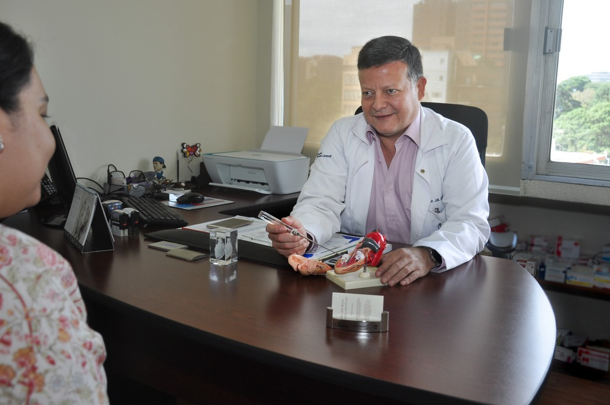
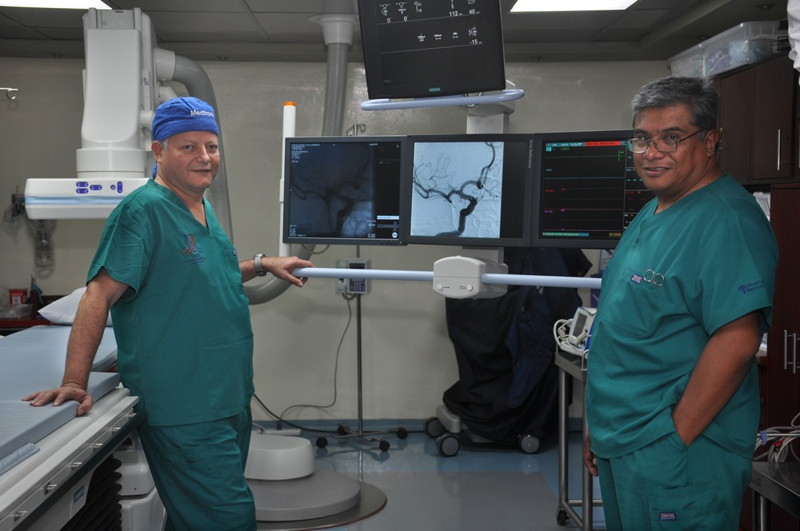

El cardiólogo dijo lo fácil que es deshacerse de la hipertensión y otras enfermedades del corazón
Dr. José Miguel Castellanos Peláez es uno de los cardiólogos más reconocidos de Guatemala. Se hizo famoso por usar un método completamente diferente para tratar la hipertensión. En su arsenal no hay medicamentos que están acostumbrados a ver en los estantes de las farmacias.
Dr. José Peláez asegura que el 99% de los medicamentos para la hipertensión son chupetes, negocios y marketing, no ayudan a tratar la presión arterial alta. El médico afirma que la hipertensión solo se puede curar de una manera – a través de la limpieza de los vasos sanguíneos.
Nuestro corresponsal logró entrevistar al Dr. José Peláez, donde contó por qué la limpieza de los vasos sanguíneos no solo es el método más efectivo para tratar la hipertensión, sino también como una excelente manera de sanar todo el cuerpo en su conjunto.

- Hola, Dr. José Peláez. Usted afirma que la limpieza vascular es la base de la salud y la ausencia de hipertensión. ¿Por qué crees eso?
- Hola, esta no es mi opinión personal, ¡es un hecho probado! El funcionamiento de todos nuestros sistemas depende de la circulación sanguínea. La sangre suministra oxígeno, nutrientes y hormonas a los tejidos del cuerpo.
Desafortunadamente, 8 de cada 10 personas en todo el planeta a partir de los 35 años tienen problemas vasculares. La razón de esto es una dieta poco saludable, fumar, beber alcohol, un estilo de vida sedentario y una ecología deficiente.
En las paredes de los vasos del corazón, el cerebro, los riñones y las extremidades inferiores se deposita el colesterol, se forman las llamadas placas de colesterol. La luz de los vasos se estrecha, por lo que el suministro de sangre a los órganos se deteriora. Se vuelve más difícil para el corazón bombear sangre. Esto causa presión arterial alta – hipertensión.

Diré más, debido a trastornos circulatorios, una persona experimenta insomnio, mareos, impotencia, irritabilidad, apatía, se dispersa y se observan trastornos de la memoria. También debido a la mala circulación sanguínea en las extremidades, se desarrolla artrosis, hipoxia y se ralentiza el metabolismo.
- ¿Con qué frecuencia los problemas vasculares en las personas causan complicaciones?
- Según mis observaciones personales, si una persona tiene problemas con los vasos sanguíneos, inevitablemente conduce al desarrollo de complicaciones. Al principio, tienen una forma inofensiva en forma de mareos, debilidad, falta de aliento, aumento de la fatiga, etc.Pero con el paso de los años, sin el tratamiento adecuado, los problemas con los vasos sanguíneos se convierten en complicaciones y consecuencias más graves. Por ejemplo:
Aterosclerosis
Los vasos se obstruyen, lo que afecta el flujo sanguíneo, y en casos extremadamente avanzados, las placas pueden bloquear completamente el flujo sanguíneo. Si esto sucede en una arteria grande, la situación está plagada de complicaciones graves, hasta la muerte.
Hipertensión
El aumento de la presión arterial y la aterosclerosis están interrelacionados. La aterosclerosis causa un aumento en la presión arterial y, a su vez, acelera el desarrollo de la aterosclerosis – este es un círculo vicioso.
Enfermedad coronaria
Los vasos obstruidos de las arterias coronarias causan esta patología. Con una ruptura repentina de la placa, puede ocurrir una superposición completa de la luz de la arteria, infarto de miocardio, paro cardíaco y muerte.
Hemorragia cerebral
Los vasos obstruidos afectan negativamente la circulación sanguínea y el flujo normal de sangre al cerebro, lo que conduce a la aparición de un derrame cerebral. Las consecuencias más comunes para una persona después de un accidente cerebrovascular: trastornos de la deglución, debilidad en el cuerpo y las extremidades, incontinencia, dolor en la cabeza y el cuerpo, parálisis, trastornos del sueño, audición y visión.
Infarto
Los pacientes que han sufrido un infarto de miocardio a menudo desarrollan trastornos del ritmo cardíaco. Debido a la necrosis del área del miocardio y la formación de cicatrices, la función contráctil del corazón disminuye, lo que resulta en el desarrollo de insuficiencia cardíaca.
La mortalidad por enfermedades cardiovasculares es 4 veces mayor que la de otras enfermedades. Todos los médicos lo saben y entienden que mantener los vasos en un estado saludable es una necesidad, especialmente para las personas de 35 años.
Pero aún así, los cardiólogos en Guatemala todavía recetan medicamentos para la presión arterial alta que la reducen temporalmente pero no la tratan.
Entiendo que la limpieza de los vasos no es lo más fácil. Eliminar las placas de colesterol que se formaron no es tan fácil. La mayoría de los medicamentos existentes (estatinas, antagonistas del calcio, etc.) solo empeoran la situación. Compactan las placas, aumentando ligeramente el lumen. Después de un tiempo, el área compactada volverá a crecer y cerrará la luz del vaso.
- Dígame, ¿la hipertensión es siempre una consecuencia de los vasos obstruidos?
Hay factores que influyen en el desarrollo de esta enfermedad, los principales son: edad, diabetes mellitus, obesidad, tabaquismo, estilo de vida sedentario, colesterol alto, mala alimentación y herencia.
Todos los factores, excepto este último, afectan principalmente negativamente a los vasos humanos. Más adelante, como resultado, se desarrollan complicaciones, incluida la hipertensión. Si hablamos del factor hereditario, entonces aquí hay una situación ligeramente diferente: el cuerpo humano está predispuesto inicialmente a trastornos del sistema cardiovascular. ¡Pero! Para que estas violaciones ocurran, se necesita un impulso en forma de los factores anteriores, solo que menos pronunciado.
Puedo responder a su pregunta de la siguiente manera: los vasos obstruidos tarde o temprano siempre conducen a enfermedades cardiovasculares.
- Si no es un secreto, ¿cómo se realiza la limpieza de los vasos?
- No tengo secretos. ¡Por el contrario, solo estoy a favor de que tantas personas conozcan mi método de limpieza de vasos! Mi tarea son personas sanas que viven una vida plena.
Hasta hace poco, la limpieza de vasos era una tarea difícil. El paciente tuvo que prescribir un complejo de vitaminas y medicamentos, prescribir una dieta y observar las mejoras durante varios meses. Si no lo hubo, se hicieron ajustes en la terapia.
Pero gracias a los avances científicos en el campo de la medicina, en 2021, los medicamentos realmente efectivos para la limpieza vascular comenzaron a aparecer en el mercado. A diferencia de sus predecesores, se basan en otros principios activos y limpian los vasos de las placas de colesterol en lugar de compactarlos.
Ahora la limpieza de los vasos no requiere un enfoque integrado, los nuevos medicamentos incluyen todo lo necesario para este procedimiento.
- ¿Estos medicamentos deben tomarse bajo la supervisión de un cardiólogo? Me temo que algunos de nuestros lectores podrían automedicarse.
- El medicamento, que me recetan personalmente, no conlleva ningún peligro para el paciente. No tiene contraindicaciones, incluso en violación de la dosis no causa complicaciones. Por lo tanto, específicamente se puede tomar de forma independiente.
Vale la pena tener en cuenta que no todos los medicamentos para los vasos sanguíneos son seguros. La elección debe abordarse con especial cuidado, de lo contrario puede causar daños graves al sistema cardiovascular.
- Comparta, ¿qué medicamento seguro prescribe a los pacientes?
- ¡Claro! Se llama . Además, le diré cómo funciona y explicaré por qué para el tratamiento de la hipertensión es el mejor medicamento hasta la fecha, tal vez incluso para los próximos años.
En primer lugar, enfatizo que todas las sustancias activas de este medicamento se sintetizan a partir de compuestos vegetales, por lo que el medicamento es seguro y no tiene contraindicaciones.
disuelve el exceso de coágulos de fibrina en la sangre, una proteína esencial en el cuerpo humano. Con lesiones vasculares, forma un pequeño coágulo de sangre, deteniendo así el sangrado. Pero su exceso conduce a la obstrucción de los vasos sanguíneos. Por lo tanto, la regulación de la fibrina en la sangre es una garantía de vasos sanos.
expande los vasos y desencadena el proceso de proliferación – crecimiento excesivo de las células del músculo liso vascular, haciéndolos más elásticos, fuertes y curando sus áreas dañadas.
Una de las principales ventajas de este medicamento es quelos principios activos disuelven las placas de colesterol en los vasos. Inmediatamente haré una reserva: no vale la pena esperar un milagro, este proceso es largo y toma de 1 mes de tomar el medicamento regularmente.
Además, el medicamento tiene un efecto de adelgazamiento de la sangre, solo que su naturaleza no es tan pronunciada como la de los medicamentos sintéticos. afecta la viscosidad de la sangre gradualmente, a las pocas semanas del Inicio de su curso, evitando así los riesgos de hemorragia interna.
Observo que la dilución de la sangre también es un factor integral de los vasos sanguíneos sanos y el cuerpo en general. El riesgo de coágulos de sangre se reduce al mínimo, mientras que mejora la circulación de la sangre a través de los órganos: se enriquece mejor con oxígeno y nutrientes.Además, la sangre espesa al corazón es más difícil de empujar a través de los vasos, lo que da una carga excesiva.
- ¿Qué tan rápido se produce el efecto de y con qué frecuencia tomarlo?
Después de 2-3 recepciones, la presión se estabiliza dentro de los límites de la norma. Si bebe un curso completo, el efecto persiste hasta 3 años, el período depende del estilo de vida de la persona y su estado original.
- ¿Dónde puedo comprar este medicamento y por qué no lo usan los cardiólogos?
- Diré esto: tengo un par de buenos amigos médicos que recetan este medicamento a sus pacientes. Pero el resto de los médicos no lo saben o no tienen la competencia adecuada en el tratamiento de la hipertensión, bueno, la tercera opción es una actitud de escupir a la salud de sus pacientes.
Personalmente, ordeno el medicamento en el sitio web oficial del fabricante para mis pacientes. El precio aquí es siempre el más bajo y, a menudo, se vende con descuento. Y aquellos que ordenan para uso personal, reciben asesoramiento de un especialista.
Que yo sepa, ahora solo se vende en el sitio web oficial del fabricante y en lotes limitados.
- Gracias por tomarse su tiempo y hablar sobre el método efectivo para tratar la hipertensión. Una Última pregunta: ¿qué consejo darías a nuestros lectores?
- ¡Trate solo a especialistas competentes y preste atención a su salud, especialmente al sistema cardiovascular! Y asegúrese de limpiar los vasos una vez cada 1-2 años.
Gracias por otro artículo útil! Siempre encuentro en este portal información interesante. También un agradecimiento especial al médico, quien en su apretada agenda pudo reservar tiempo para la entrevista
Gracias a este artículo, ahora hay todas las sospechas de que tengo problemas con los vasos... Debilidad, me mareo constantemente... Pensé que era debido a las grandes cargas en el trabajo.
Tuve la suerte de haber comprado hace un mes con un descuento. Quiero decir que el medicamento ayuda notablemente con la hipertensión. La presión antes del curso era de 140/90 a 170 por 100, ahora se mantiene de 110/80 a 130/90
Bebo esta droga por segunda vez en un año, aunque no tengo problemas con la presión. Sobre los vasos, sé desde hace mucho tiempo que la salud del cuerpo en su conjunto depende de ellos. Después de cada curso empapado, me siento renacido. Nuestro estilo de vida moderno es un gran estrés para el cuerpo. Llevo un estilo de vida saludable desde hace 8 años, ¡pero en una encuesta reciente me dijeron que tenía problemas cardíacos! Recetan un paquete de medicamentos…
La droga salió relativamente recientemente, y ya hay falsificaciones. Me encontré con uno en una tienda en línea, costaba mucho más barato el medicamento, lo ordené e inmediatamente me di cuenta de que me habían engañado. Ni siquiera bebió.
La droga es la mejor. Aconsejo a todos que lo compren, ni siquiera lo piensen. El segundo mes lo bebí, la presión por encima de 130 en 90 no se elevó ni una vez.
¿Es suficiente una lata para el curso???
No es suficiente, hay que tomar unos cuantos. Deje una solicitud y le ayudarán a elegir la cantidad correcta. Así que se venden para prescribir una dosis más precisa, leí sobre esto.
Me alegro de haber llegado a este recurso. Es un milagro. Ahora sé qué medicamento tomaré para reducir la presión.
Hace tiempo que buscaba dónde comprar . Escuché sobre él en una transmisión, pero no dijeron dónde comprarlo…
Este artículo salvará más de cien vidas.
La mía ya se salvó, no importa lo fuerte que suene. Si no fuera por este medicamento, parece que nada me ayudaría. ¡A menudo tenía presión por encima de 180 en 110! Me han llamado a una ambulancia varias veces. Tomaba un montón de pastillas, no tenía sentido prácticamente. La magia sucedió después del curso , como si me reemplazaran los vasos y el corazón. Por encima de 140 en 85 no aumentó la presión, en promedio se mantiene en el área de 120 en 80
Excelente remedio, ordenado.
Gracias a los autores de este artículo, ahora puedo comenzar normalmente el tratamiento de la hipertensión. Voy a tirar todas las pastillas que me recetaron los médicos. Solo me hacen peor.
Deja tus comentarios:
Su comentario sobre la moderación